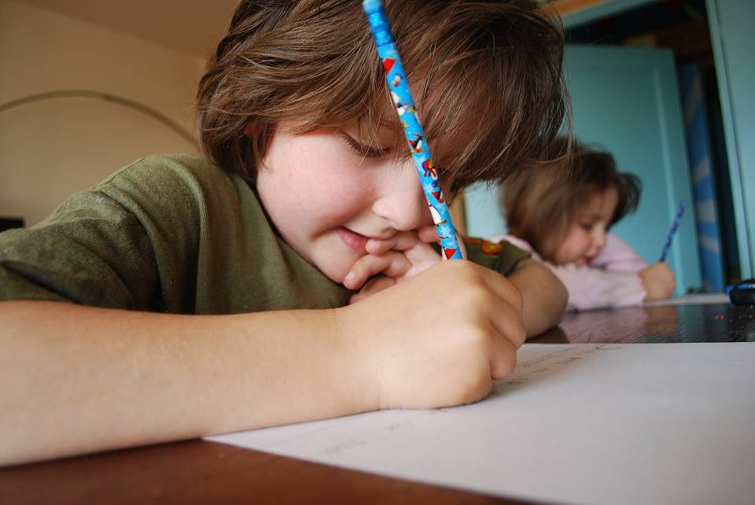

איך נוכל לעזור לילד שלנו בהתמודדות עם קשיי למידה?

הורים רבים מוצאים עצמם אובדי עצות,
המורה מדווחת על איטיות או קריאת משובשת, שגיאות כתיב..
הם עצמם שמים לב שלילדם קשה להתמודד לבד עם שיעורי הבית ובהתאם, הציונים נמוכים והתחושה מתסכלת..
עולה חשד כללי לקיומה של לקות למידה, ונשאלת השאלה מה צריך לעשות על מנת לעזור לילד שלנו להתמודד עם הקושי?
תחילה, מומלץ להפגש לשיחה עם מחנכת הכיתה והיועצת, על מנת לקבל תמונה ברורה יותר באשר לתפקוד הילד בבית הספר ולקשיים הקיימים, ומתוך כך להחליט על דרכי פעולה.
אפשרות אחת הנה לערוך אבחון דידקטי, שתפקידו לסייע באיתור הסיבות לקשיי הלמידה, לאתר נקודות חוזק וחולשה של התלמיד ולאפשר לו למצות את יכולותיו על ידי בניית תכנית טיפולית מתאימה ומתן התאמות במבחנים (ברמה 1 ו-2). אפשרות נוספת, היא לערוך אבחון פסיכודידקטי, אשר כולל אבחון אנטיליגנציה, בחינת היבטים רגשיים שעשויים להשפיע על קשיי למידה וכן מתן התאמות ברמה 3 (בחינה בעל-פה ומבחן מותאם).
מומלץ להתייעץ עם איש מקצוע בתחום, על מנת להבין מהי הבעיה, למי עליכם לפנות ואיזה אבחון כדאי לערוך.
לשאלות,
צרו עמי קשר 052-8219395
סיון גומבוש - להצליח עם חיוך